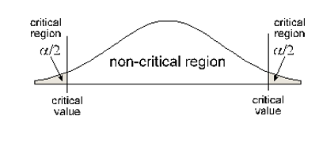
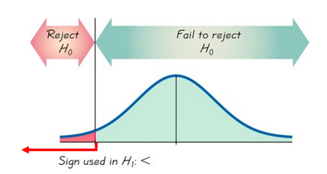

Unit 4 Hypothesis Testing
7.1 Hypothesis Testing with One Sample
Basic Steps of a P-value Hypothesis Test:
Step 1: Write the claim as a mathematical statement.
Step 2: Identify the Null Hypothesis and the Alternative Hypothesis.
Null Hypothesis:
What we assume is true about the population parameter
Will be the same as the claim if the claim contains an equal sign.
\( \left[H_{0}\right] \quad \leq \quad \geq \quad =\)
Always Contains Equality
-
Alternative Hypothesis:
The complement of the null hypothesis
Will be the same as the claim if the claim does not contain an equal sign.
\( \left[H_{A}\right] \quad < \quad > \quad \not=\)
Never Contains Equality
Step 3: Determine the type of test and shade the graph.

Left- tail: HA contains the following symbol: <

Right-tail: HA contains the following symbol: >

2-tail: HA contains the following symbol: ≠
Rejection area (critical region) is the area beyond your Critical Value and has area α (the significance level of your hypothesis test). In a right or left tail test, that area is in one tail. In a two tail test, the area in each side of the critical region is α/2.Step 4: Calculate the test statistic from sample data.
A Test Statistic is the value computed from sample data and used in making a decision about rejection of the Null Hypothesis.
Test statistic for proportion:
- p = population proportion q = 1 – p
- n = sample size
- \(\hat{p}=\frac{x}{n}\) sample proportion
- \(z=\frac{\hat{p}-p}{\sqrt{\frac{p q}{n}}}\)
Test statistic for mean:
- s = sample standard deviation
- n = sample size
- \(\mu\) = population mean
- \(\overline{x}\) = sample mean
- \(t=\frac{\overline{x}-\mu}{\frac{s}{\sqrt{n}}}\)
Step 5: Calculate the p-value for your test statistic.
P-value: the probability of being as extreme, or more extreme, than your data, assuming is correct.
- Left tail test: contains “< ”. P-value = area to the left of the test statistic.
- Right tail test: contains “ >”. P-value = area to the right of the test statistic.
- Two tail test: contains “≠”. P-value = twice the area in the tail beyond the test statistic
Step 6: Determine the rejection criteria.
- Using probability: Reject \(H_0\) if the p-value \(\leq\alpha\) .
- Using test statistics: Reject \(H_0\) if the test statistic is in the rejection region.
Step 7: Make One of Two Decisions About the Null Hypothesis
- Reject the Null:
- If P-value \(\leq\alpha\) , reject \(H_0\).
- Type I error: rejecting \(H_0\) when it is actually true
- Fail to Reject the Null:
- If P-value \(> \alpha\), fail to reject \(H_0\).
- Type II error: failing to reject \(H_0\) when it is actually false
Step 8: Make A Statement About The Claim Based On Your Decision About the Null Hypothesis.
| \(H_0\) is the claim | \(H_A\) is the claim | |
|---|---|---|
| Reject \(H_0\) | “There is sufficient sample evidence to reject the claim that…” | “There is sufficient sample evidence to support the claim that…” |
| Fail to reject \(H_0\) | “There is not sufficient sample evidence to reject the claim that…” | “There is not sufficient sample evidence to support the claim that…” |
Introduction to Hypothesis Testing: Steps 1-3
Remember to use the correct symbols.
- Mean: \(\mu\)
- Proportion: p
- Standard deviation: \(\sigma\)
- The mean IQ of statistic students is at least 110.
- Claim:
\( \mu \geq 110 \) - \(H_0\):
\( \mu \geq 110 \) (Assume \(H_0: \mu = 110 \)) - \(H_A\):
\( \mu < 110 \) - The significant area (rejection area) is located where
\( \mu \) is significantly less than 110 , therefore, this is aLeft-Tailed test.

- Claim:
- The mean wait time for a GrubHub delivery is more than 40 minutes.
- Claim:
\( \mu > 40 \) - \(H_0\):
\( \mu \leq 40 \) (Assume \(H_0: \mu = 40 \)) - \(H_A\):
\( \mu > 40 \) - The significant area (rejection area) is located where
the mean wait time is significantly greater than 40 minutes , therefore, this is aRight-Tailed test.

- Claim:
- The percentage of people who prefer milk chocolate over dark chocolate is 70% as claimed by Madison advertising agency.
- Claim:
\(p=0.7\) - \(H_0\):
\(p=0.7\) (Assume \(H_0: p=0.7 \)) - \(H_A\):
\(p \neq 0.7\) - The significant area (rejection area) is located where
\(p\) is significantly different than 0.7 , therefore, this is aTwo-Tailed test.

- Claim:
- The percentage of all students who eat sushi at least once per week is less than 27%.
- Claim:
\(p < 0.27\) - \(H_0\):
\(p \geq 0.27\) (Assume \(H_0: p=0.27 \)) - \(H_A\):
\(p < 0.27\) - The significant area (rejection area) is located where
the proportion of all students who eat sushi is significantly less than 27%, , therefore, this is aLeft-Tailed test.
- Claim:
- The mean IQ of statistic students is at most 110.
- Claim:
\( \mu \leq 110 \) - \(H_0\):
\( \mu \leq 110 \) (Assume \(H_0: \mu = 110 \)) - \(H_A\):
\( \mu > 110 \) - The significant area (rejection area) is located where
\( \mu \) is significantly less than 110 , therefore, this is aRight-Tailed test.
- Claim:
- The percentage of all men who prefer milk chocolate over dark chocolate is different than 70% as claimed by Madison advertising agency.
- Claim:
\(p \neq 0.7\) - \(H_0\):
\(p = 0.7\) - \(H_A\):
\(p \neq 0.7\) (this can be translated ar \(p<0.7\) or \(p>0.7\)) - The significant area (rejection area) is located where
\(p\) is significantly different than 0.7 , therefore, this is aTwo-Tailed test.
- Claim: